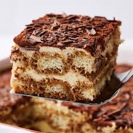

Tiramisu: Classic Italian Dessert
Tiramisu is a beloved Italian dessert that combines the rich flavors of coffee, mascarpone cheese, and cocoa. This no-bake treat features layers of coffee-soaked ladyfingers and a creamy mascarpone mixture, creating a dessert that is both indulgent and sophisticated.
The magic of Tiramisu lies in its harmonious blend of flavors and textures. The bitterness of the espresso pairs perfectly with the sweet, creamy mascarpone, while the cocoa powder adds a touch of elegance. Each bite delivers a satisfying contrast between the creamy filling and the slightly crunchy ladyfingers.
Tiramisu is not only a delicious end to a meal but also a versatile dessert that can be adapted with various flavors and ingredients. Its rich, luxurious profile makes it a favorite among dessert lovers, offering a delightful taste of Italian culinary tradition.
Back to Home